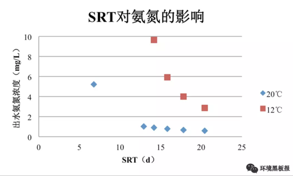
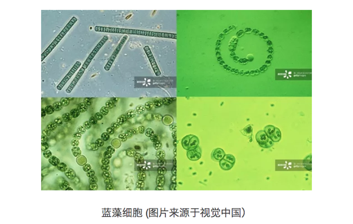
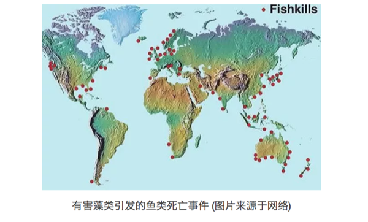
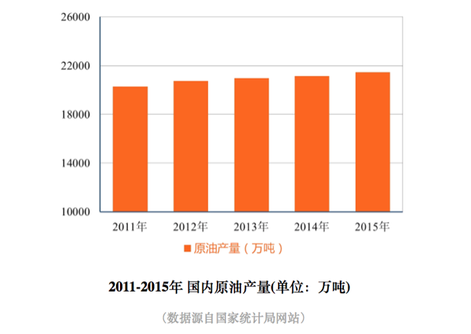
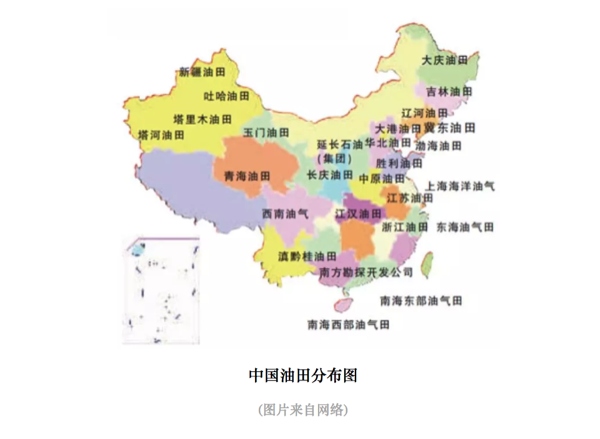
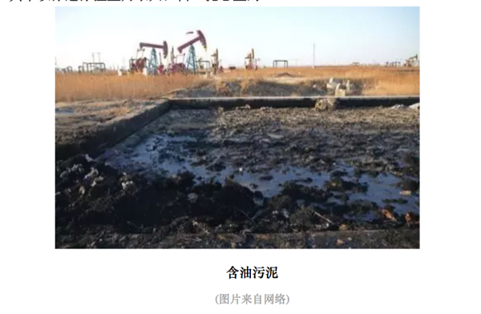
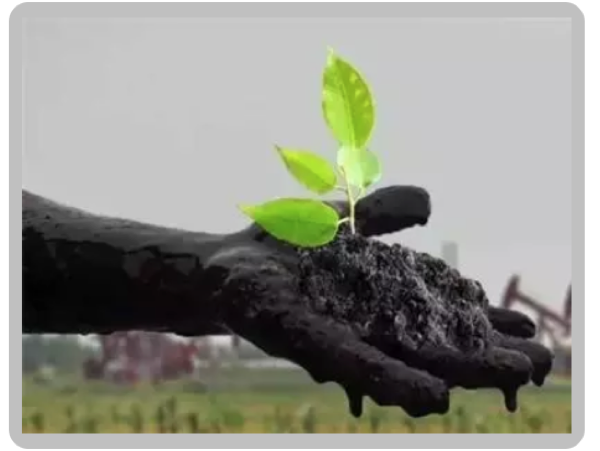

第4章 工程实践
4.1 城市之殇
4.1.1 序言
2012年7月21日，一场61年一遇的大暴雨让北京成为“汪洋水城”，想不到有生之年居然可以在帝都这个缺水的城市同时实现了“山盟海誓”。无独有偶，不仅北京遭遇了这样的窘境与困惑，其他城市诸如南京、武汉、广州、杭州等也先后开启了“看海模式”，这种“城市之殇”已经成为近年来城市发展挥之不去的阴影。

那么，为什么我们城市的排水能力一遇到暴雨甚至中小雨就原形毕露？这就有必要来聊一聊本期的话题：“海绵体”。海绵体，顾名思义，是一种对蓄水的形容，自然界原本是一个巨大的海绵体，而如今城市的爆发式发展建设已严重破坏了自然的海绵体，损害了自然的水循环系统。传统的城市建设模式根本不具备应对超标雨水的能力，那么必然会导致“逢雨必涝”，同时还会带来水环境污染、水资源紧缺、水安全缺乏保障等问题。
2013年12月12日，习近平总书记在《中央城镇化工作会议》的讲话中强调：“提升城市排水系统时要优先考虑把有限的雨水留下来，优先考虑更多利用自然力量排水，建设自然存积、自然渗透、自然净化的海绵城市”。海绵城市顺应时代号召应“运”而生。
4.1.2 海绵城市是什么
海绵城市的理念其实在我国古代早已践行，比如故宫的排水系统、云南的“哈尼梯田”模式、赣州的“福寿沟”蓄排系统等，都算作是早前的雏形。若要刨根求底地问海绵城市是什么，海绵城市更多的是一种新型的城市发展模式。

海绵城市的初衷是让城市能够像海绵一样，在适应环境变化和应对自然灾害等方面具有良好的“弹性”。简单来说，下雨的时候，城市可以像海绵一样吸水、蓄水、渗水，防止洪涝的出现；在雨水过后，干旱的时候，又可以将蓄存的水“释放”并加以利用。但同时，我们又希望这个“海绵”能发挥更大的作用，比如说还可以净化水体，让雨水在城市存积、渗透的同时得到净化，以利于进一步的雨水资源利用和生态环境保护。这就为海绵城市的设计、建设提出了更高的要求，不单是依靠恢复或构建自然途径来蓄水、存水，还应当结合人工措施来辅以完成水资源的净化、利用和排放。

因此海绵城市的具体建设既不能“窄”，也不能“宽”。太窄就会回到植树造林搞绿化的老路子上去；太宽就会变成“海绵城市一个框，啥都可以往里装”。其实海绵城市建设还是要以目标与问题为导向，运用“源头、中途、末端”的措施，使绿色设施与灰色措施相结合，才能实现真正的目标。
简明地讲，源头主要以低影响开发设施（LID）为主，包括植草沟、雨水花园、生物滞留设施等，中途主要包括：雨水廊道、管网、沟渠等，末端主要包括：湿地、调蓄塘、调蓄池、水系等。

4.1.3 海绵城市试点
海绵城市的建设借助国家重视生态环境的东风，目前共执行了2个批次、30个城市的试点，试点期3年。期内国家将给予直辖市每年6亿专项补助，省会城市每年5亿，其他城市每年4亿元。


目前来看，海绵城市建设还没有一个全国性的“统一标准”，主要是因为我国地域差异大，东西南北中，面临的问题与挑战各不相同。比如北方地区多为缺水的寒带地区，南方地区则更容易发生内涝，西部地区多属于湿陷性黄土地区，也极度缺水。因此不同区域的海绵城市建设也应因地制宜。
4.1.4 浅谈海绵感悟
笔者从2015年开始从事海绵城市建设方面的工作，先后参与了多地的海绵城市试点建设的咨询、设计等工作，主要涉及海绵城市建设系统方案编制等方面。这里跟大家分享一下三年多来笔者对海绵城市建设的一些想法与感悟，希望能对现在或将来参与到海绵城市建设中的同仁们有所帮助。
4.1.4.1 从管理部门的角度
如果您是一位相关部门的负责人，笔者虽人微言轻，但也愿意提供一些思考供您参考。 海绵城市的建设是一个很复杂、庞大、时间跨度也大的系统工程。而且里面涉及到很多学科和部门，简单数数就需要规划、市政、园林、水利、道路等专业；住建、水利、园林、环保等部门来互相配合。因此如何统筹规划，通力协作，避免形成各自为政、“九龙治水”的局面，是一门很深的学问。
同时，很多城市现在都有新、老城区，新城区建设制约少、阻力小，一旦方案设计得当，大可一马平川。但是老城区就不一样了，不仅居民多、遗留矛盾和问题多多，牵一发而动全身，搞不好容易激化矛盾。这个时候，就不能只顾海绵城市建设的目标，还要考虑经济承受能力、轻重缓急、资金利用效率、建设时序、社会影响等方面。 千万、千万不能不分轻重地全面开工建设和盲目翻挖。最好可以以解决城市内涝、雨水利用、黑臭治理为突破口，结合棚户区和城乡危房改造、老旧小区有机更新等工作同步推进。
4.1.4.2 从项目公司负责人的角度
当前海绵城市的建设基本上都以项目打包的形式交由PPP公司全权负责建设。如果您是一位项目公司的负责人，首先恭喜您拿下了海绵城市的项目，但是接着愁人的事情来了。在很多项目管理过程中，一些PPP公司“当家不做主”，没有自主权，项目的管控不是由PPP公司独立操作，而会受到相关部门的干预，导致指挥不合理的局面。因此，如果您能在项目开展前和相关部门做好充分的沟通，对您后续工作的开展会有很大帮助。 同时，虽然目前海绵城市都处在建设之中，但是即使这样，试点期也已经过了2-3年，后期的运营维护也该做一些考虑了。如果您公司还没有做这方面的准备，那可千万要小心了，现在环境追责可是很严重的哦。
4.1.4.3 从设计师的角度
如果您是一名规划师或者设计师，请一定要“迈开腿，管好嘴”。一定要多去现场，没有调查就没有发言权，不能板凳一坐就站不起身，嘴皮一碰就出方案。曾经有一位设计院的设计师理直气壮地反驳说没必要去现场看这么细，走了个过场回来，后来设计的时候全部依靠业主来提供信息作为依据。结果可想而知，做出来的设计方案根本经不起推敲，漏洞百出，更别说拿去指导施工建设。

同时也提醒大家，海绵城市建设不只是“搞种植、搞绿化”。“花花草草”固然重要，但我们也不能天天搞“拈花惹草”的老一套。海绵城市的实质应该是绿色设施（雨水花园，植草沟，下凹式绿地等）与灰色设施（管网，泵站，调蓄池等）相结合，让它们在不同时间与空间上起到相应的功能与作用。
4.1.5 结语
海绵城市的概念一经提出，就在全国迅速地铺展开来。国内新事物的出现，不像国外“自下而上”的推进模式，而是“自上而下”的运动式推动。然而，没有前期多年的研究数据作为支撑，直接开展工程实践难免会面临各种各样的困境。 目前，“海绵城市”的提法基本已家喻户晓，无人不谈“海绵”；然而能真正潜下心来认真对海绵城市进行系统的研究与梳理的人却少之又少。一个新的领域，往往需要十年甚至更长的时间来形成系统性的理论与技术体系，之后才有可能更高效、更全面指导工程实践。希望各位海绵同仁，我们一起潜心努力，为这个领域尽自己的绵薄之力。
作者：王宇 校稿：广播站王站长 编辑：栟 手绘美图：丫头晚安
4.2 污师私房菜: OUR 和 SV30 的应用
在污水处理领域，活性污泥工艺可谓无人不知无人不晓。活性污泥吃着排泄物，干着体力活，最终为我们产出清水，真乃当下“撸起袖子”的楷模。说到活性污泥真是让人既爱又恨，爱的是它能帮我们处理污水，恨的是它不善于表达，和人类语言识别系统无法链接，当污水处理系统出问题的时候，初入运维界的你却无法第一时间判断活性污泥究竟为什么罢工，只能求爷爷告奶奶的到处请教大神。
今天通过活性污泥呼吸图谱和污泥沉降性比的应用介绍，通过熟练掌握这两个污水处理厂运维秘籍，让你可以和活性污泥随时交流，对污水处理厂的运行维护清晰把脉，及时准确解决出现的问题，让你的格调得到迅速提升，变身污水处理领域的运维大神。
4.2.1 呼吸速率的前世今生
话说20世纪50-70年代，国外有一群水处理界的大神（Eckenfelder，Mckinny，Lawrence-McCarty）闲着没事东看看西瞅瞅，就弄了个活性污泥模型出来，在里面就提到了呼吸速率（Oxygen Uptake Rate, OUR）的概念。所谓呼吸速率是指单位时间内活性污泥消耗的溶解氧的量。呼吸速率的概念由来已久，关于测量呼吸速率的专利也是层出不穷。然而呼吸速率一直应用于模型理论层面，在实际指导污水厂的运行方面却是凤毛麟角。（如何测量OUR就不在这里赘述了，请大家自行查阅相关秘籍）
我们知道在活性污泥工艺中有两种主导微生物：异养微生物和自养微生物。异养微生物需要消耗外部碳源维持自身生长（不给肉吃，它就死给你看）；而自养微生物就是楷模了，可以通过分解无机物获得能量维持自身生长（真是吃着土，干着活）。这两种微生物都有各自的呼吸速率，异养微生物降解有机物时的呼吸速率称为异养菌呼吸速率；自养微生物降解氨氮时的呼吸速率称为自养菌呼吸速率。有时活性污泥闲着无事也会吃些自己身上的东西，把微生物利用细胞内含物质作为基质进行新陈代谢过程中的呼吸作用称为内源呼吸速率。图谱如下图所示：

4.2.2 OUR应用的理论介绍
上面介绍了呼吸图谱的组成，下面来谈一谈呼吸图谱的作用。为了更清楚的起到对比，我们需要在污水处理厂正常运行时，刻苦用心的你日常闲来无事多测测好氧池OUR，建立一个污水处理厂的OUR数据库，对正常情况下的OUR烂熟于心，只有这样你才能了解你自己一亩三分地的情况。
通常，活性污泥OUR值的大小及其变化趋势可对好氧池负荷的变化情况起到预警作用，同时OUR的变化也间接反映出活性污泥自身的健康情况。我们分两类情况进行分析：
4.2.2.1 OUR异常高于正常值的情况
如果OUR若大大高于正常值，表示活性污泥需要消耗大量的溶解氧，表明优秀的活性污泥小伙子们正在撸起袖子加油干，这也往往预示着污泥负荷过高，可能超过污水处理厂的处理能力，这时出水水质可能超标。
你可以脑补一下这个场景：一个房间里面有十个饥饿的小伙子，你拿来十个馒头，他们能以迅雷不及掩耳盗铃响叮当之势把这十个馒头干掉，可如果你拿来一千个馒头，就算是吃到怀疑人生也吃不完。
4.2.2.2 OUR异常低于正常值的情况
如果OUR长期低于正常值，表示活性污泥消耗的溶解氧较少。这就需要分两种情况来分析了，一种情况是活性污泥精神抖擞，战斗力强，污染物负荷较小，污染物降解好，出水水质好；另外一种情况就是污泥活性差，污泥本身对污染物的降解性能不良，这可导致出水水质不达标。
第一种场景是这样的：一个房间里面有十个饥饿的小伙子，你就给五个馒头，估计最后盘子都会被吃掉；
第二种情况是这样的：同样是这个房间，同样是五个馒头，但是吃馒头的人变成了十个胃口欠佳的病人，结果可想而知。
4.2.3 OUR应用的实战演练
上面对OUR应用的理论介绍还是比较笼统的，下面详细讲解一下如何利用OUR来判断出水水质，针对OUR的应用进行实战演练。
4.2.3.1 实战场景1
用心的你费了九牛二虎之力测定了好氧池的OUR，发现OUR值比较低，根据理论分析，你记住了OUR异常低于正常值的第一种分析情况，认为活性污泥小伙子们战斗力强，降解能力个顶个，赶紧跟领导汇报说出水达标没有问题。你刚汇报完，厂里就通知你出水超标了，这脸被打的啪啪响。
这时,你一定会问，OUR值低，说明出水水质好，怎么出水还超标了呢。少年不要急，听我慢慢说来。
在OUR值比较低的情况下出水超标，说明此时的活性污泥并没有正常工作，那该如何解决呢？这种情况下你只需要往装置内部补充足够的碳源，最常见的是投加乙酸钠，看看投加碳源后的OUR值变化，如果OUR值还是很低，说明你的活性污泥活性差，大多都是老弱病残，再怎么给他们喂食碳源也不能发挥他们的作用；如果OUR值在投加碳源后明显升高，说明你的活性污泥是健康的，他们只不过是饿了，需要饱食一顿接着好好干活。
因此，在好氧池OUR值比较低的情况下，判断出水是否达标的时候，需要结合好氧池当下的OUR和投加完碳源后的OUR进行判断，才能准确对污水处理厂的运行状态进行评价。
4.2.3.2 实战场景2
勤快的你这天又测定了好氧池OUR，发现OUR值很高，结合OUR异常高于正常值的情况分析，你下结论说出水水质达标。
少年你又要被打脸了。
好氧池当下OUR值高，说明好氧池中污染物负荷高，表明好氧池需要消耗大量的溶解氧，为了保证出水达标，你需要做一系列应对措施，比如增加曝气，减少排泥量等等，只有这样才能保证你的出水达标。
4.2.3.3 实战场景3
就是这么巧，你们公司属于水处理界佼佼者，你一亩三分地里面管辖着若干个污水处理厂，你也坚持着建立了各个污水处理厂OUR的数据库，你也是一个闲着无聊喜欢翻数据的人。有一天，你发现针对不同污水处理厂，即使在进水和出水水质相差不大的情况下，好氧池的OUR差别仍然很大，这时你又迷茫了。
不要迷茫少年，因为在测量OUR时并没有考虑污泥浓度的因素，污泥浓度高的，表明污泥中活性微生物较多，OUR值较高，污泥浓度低的，表明活性微生物少，OUR自然就低一些。你可以想象一下，10个人和100个人的体重还是有很大差别的。
那如何采用一个统一的评价指标来评价呢？我们在污水处理厂的运营维护过程中，善于发现问题的同时，还要善于解决问题。这时，我们引入一个叫比呼吸速率（OUR/MLSS）的评价指标，你就会发现在入水水质和出水水质相差不大时，各个水厂的比呼吸速率相差也不是很大，是不是完美的解决了你的困惑呢？
4.2.4 SV30的应用实战
上面给大家讲了比较高大上的OUR，接下来再给大家讲讲污泥沉降比的实战应用。SV30，在污水处理界的地位，犹如《天龙八部》中的扫地僧。可谓是量筒在手，天下我有。
做过污水处理的人应该都知道，污泥30min沉降性能，可以一定程度上说明污泥的性状，所谓画虎画皮难画骨，具体判断污泥处在哪个状态却不是一件容易的事。可能或许也许maybe只有真正达到扫地僧的级别才能通过SV30一眼识别出污泥的性状来。
少年也不必灰心，鄙人在藏经阁翻阅典籍无数，浏览宝典若干，给大家总结了一些关于SV30的要点。大家理论联系实际，在测试SV30的时候，通过实际观察并结合我提供给大家的要点，相信大家早晚能达到扫地僧的级别。

这里告诉大家一个小诀窍，千万别告诉其他人。
在测试SV30的过程中，重点观察前5min的沉降效果，活性污泥沉降实验的前5min往往可以完成沉降过程的80%，此阶段的沉降效果好坏往往可以指导对活性污泥性能的判断。
你可千万别取完样定个时间，先睡他半小时。所谓武功再高也怕菜刀，在测SV30的时候量筒的选择很重要，建议大家选用1L的量筒，量筒过小可能会发生污泥挂壁现象影响效果。再次重申，这些小诀窍千万别告诉其他人哟。
4.2.5 结语
以上算是给大家介绍了关于污水处理的两个秘籍，
一个是修炼较困难的葵花宝典——OUR，
一个是老少皆宜的太极拳——SV30。
所谓难易结合才能事半功倍。当然，掌握了以上两个技能也不能洋洋自得，天下之大，无奇不有，只有不断充实自我，才能屹立在污水处理行业的尖端。

作为一个21世纪的污水厂操作人员，作为一个生活在大数据、物联网、云计算时代的污水厂操作人员，作为一个人工智能正在逐渐取代你饭碗的污水操作人员，仅仅依靠设计规范上面的知识已经难以追上时代的列车了。只有与时俱进，汲取新知识，用知识的力量将命运牢牢把握在自己手里。
成神的道路注定是孤寂乏味的，成神的道路注定是披荆斩棘的，成神的道路注定是一往无前的。少年，抓住当下，紧跟大师步伐，成神指日可待。
作者：阿布呆 校稿：看透， yufree 编辑：智公子 美图：丫头晚安，智公子
4.3 污师私房菜系列二:SRT的应用
4.3.1 引言
相信在理工科子民们数百万脑细胞中存储着这句话的只言片语，“在化学反应前后,参加反应的各物质的质量总和等于反应后生成的各物质的质量总和。”（如果没有，可能当初你的化学是语文老师教的）。看到这句话的瞬间，大家会嘴角上扬，自信的微微一笑“质量守恒定律嘛！！”恭喜你答对了。这时看过污师私房菜系列一的食客（没看过的客官，课后请自行补上），一定会疑问这个污水处理怎么扯到质量守恒定律了呢？客官莫要急，听我慢慢说来。
我们知道人作为一个有机体，每天通过摄入食物（想要远离油腻的同学需要注意控制摄入量）来维持机体正常运转，同时我们还需要排出一些物体（毕竟我们离神兽貔貅还差好几条长安街的距离）来保持机体的健康。污水处理厂运转机制跟人身体的运转机制相差不大。污水处理厂每天也需要摄入食物（COD、氨氮等污染物）为维持活性污泥的正常生长，同时污水处理厂每天也需要排出一部分污泥来保持水厂的健康运行。今天通过对SRT的介绍，让你轻松搞定污水厂的排泄问题。
4.3.2 SRT的含义
SRT （solids retention time）英文翻译叫固体停留时间，业界称为污泥龄。其定义为：微生物从其生成到排出系统的平均停留时间，也就是反应系统内的微生物全部更新一次所需的时间，单位是天。

微生物从呱呱坠地，到撸起袖子干活也是需要时间的，菌到中年虽然有些油腻，但是战斗力还是不容忽视的，你不等微生物成熟就排出了系统，会损失战斗力。在污水处理系统中有两类主导微生物：异养微生物和自养微生物。异养微生物从小吃香喝辣，小身体长很快就过渡到油腻的中年；而自养微生物从小自力更生，相比异养微生物，小身体长的比较慢，异养菌都繁衍好几代了，这边可能刚刚成家立业。于是乎就出现了社会矛盾，异养菌抱怨社会老龄化严重，需要排出部分老龄群体；而自养菌抱怨婴儿太多，能干活的少，希望可以给他们更多的时间去成长。如果不解决异养菌的问题，这些家伙就会自我解体，让你出水SS变高，COD也变高；同样，如果不解决自养菌的问题，这些家伙就会降低劳动强度，让你出水氨氮超标。因此，为了社会和谐，你这个污水厂主管就得玩的溜SRT，让双方都满意，让双方干劲十足。
4.3.3 SRT的应用
下面给大家分析一下不同SRT对出水污染物浓度的影响。利用某污水处理仿真软件，设定入水COD=300mg/L，氨氮=30mg/L，TP=3mg/L，工艺为 \(A^2O\)，好氧池溶解氧设定为2mg/L。根据调整排泥量得到不同的SRT。从图上可以看到随着SRT增加，出水COD、TP和SS增高，氨氮下降。SRT增长，异养菌老龄化就严重，过多的老龄化异养菌解体导致出水COD和SS增高。生物除磷主要通过厌氧释磷和好氧吸磷实现，关键在于剩余污泥的排放，你不排泥就是给自己找事情，磷当然会升高。相反，随着SRT的增长，自养微生物群落越来越健壮，一群油腻大叔干起活来也是基情满满。

从SRT的计算公式可以看出，SRT长意味着系统中污泥浓度高，这个时候你好氧池的需氧量也是增高的，需氧量增高就意味着你需要供给更多的空气花更多的钱。这年头，钱进了腰包，谁也不愿意在让它出去，所以还是狠狠心多排排泥吧。在平均气温20℃左右的时候，将SRT控制在15d左右就足够了，当然如果你是一个负责人的运营人员，可以在此基础上不断进行调整，找到一个适合自己水厂的最佳SRT。
细心的客官可能发现我上面说到“在平均气温20℃左右的时候，将SRT控制在15d左右”（如果没发现说明你在搞事情哟）。不错对于严谨的我，是不会让你挑出任何毛病的。不同温度对SRT的要求是不同的，不信你看：好吧，我承认自己打脸了，对于吃香喝辣的异养微生物管你温度多少，只要有吃的就好。看来身体好，才是真的好。从图中可以看出，不同水温下，相同的SRT下出水COD基本没有变化；同样SRT增长，出水COD呈现增高趋势。任你温度变化，我自岿然不动，该解体还是要解体。

异养微生物这货不给我面子，自养微生物还是很给面子的，不同温度对SRT的要求是不同的，不信你看：哈哈，看到了吧，不同温度下，相同SRT下，出水氨氮相差很大。同样的14.2d的停留时间，20℃时出水氨氮可以达到0.9mg/L，而12℃时高达9.64mg/L（少年要注意了，此时你已经超标，环保执法人员已经上路）。对于身体羸弱的自养菌，大冬天不给增加点人手，干起活来没基情呀。虽然有社会矛盾，但是我们要抓住主要矛盾才行，因此，在冬季水温较低的情况下，我们要适当增加SRT，保证自养微生物的处理效果。

4.3.4 剩余污泥的控制
目前，控制剩余污泥排放量的常用方法有三种：污泥浓度（MLSS）控制、污泥负荷控制和SRT控制。因为污泥负荷、SRT与出水水质直接相关，用MLSS控制排泥对系统运行意义不大。实际运行中多采用二沉池排泥，这样可以减少污泥排放体积，节约费用。虽说MLSS控制排泥对系统运行意义不大，将MLSS与SRT充分结合起来可以更加方便对排泥的控制。对于那些兢兢业业工作的人员，领导安排说每天排泥半小时，真是风雨无阻坚持每天排泥半小时，结果运行了一段时间污水厂宕机了。这位员工也是很懵逼的，我也是按照指令操作，怎么就挂了呢？大兄弟不要桑心，我给你讲个故事听听：
话说有个农夫养了一只母鸡，农户好吃好喝的伺候着母鸡，母鸡也很给力的给农夫下了一堆鸡蛋，就这么着农夫的小篮子里面积攒了10个鸡蛋，然后母鸡每天都会给农夫下一个鸡蛋。农夫每天吃一个鸡蛋，母鸡每天也给他下一个鸡蛋。最近母鸡的伙食质量下降，母鸡下蛋激情受到了打击，2天才下一个鸡蛋，可农夫生活规律还是坚持一天吃一个，就这样吃着吃着发现没有鸡蛋可以吃了。农夫发现自己吃的太多了，就好几天没有吃，又重新积攒了10个鸡蛋。这次农夫改成2天吃一个鸡蛋，母鸡还是每天下一个蛋。就这样过了一段时间农夫积攒了好多鸡蛋，发现有些鸡蛋过了保质期坏掉了。
大兄弟这下明白了吧，领导让你干这件事，你按照命令执行没有问题，关键是你要考虑一下微生物们的感受，人家都入不敷出了，你还坚持往外排，不宕机都怪了。当然你也别走到另外一个极端，你不排泥，领导会拍你的。
4.3.5 结语
私房菜一里面介绍葵花宝典：OUR和太极：SV30。今天的SRT可以比作易筋经，习得该神功可以让你从一个无名小辈变成一个江湖数一数二的高手。俗话说，功夫再高也怕菜刀，SRT对应的菜刀就是自己建立的SRT数据库。练武讲究，冬练三九，夏练三伏，SRT数据库的建立也是一个道理。要坚持针对不同季节，不同来水负荷建立相应的SRT数据库，丰富自己的武器库。污水处理界没有对与错，只有适用与否。同样污水处理界的秘籍都是有着千丝万缕的联系，将一本秘籍练到炉火纯青的地步，也就可以窥探到其他秘籍的一二了。
作者：阿布呆 校稿：yufree、大石 编辑：智公子
4.4 纳米非米
随着“水十条”、“气十条”和“土十条”的出台，我国已全面启动了“向污染宣战”的环境大战。那么纳米材料如何在环保领域掀起新潮呢？本文以碳纳米材料为一个视角，从选料-制备-应用的角度浅谈一下纳米材料在环保领域如何小试牛刀。
4.4.1 碳纳米材料
相信在很多读者的印象中，“纳米（Nanometer）”一词总是披着神秘的面纱，影影绰绰，忽远忽近。那么纳米到底是什么？实际上，它与毫米、厘米和分米一样，也就是个长度单位而已，十亿分之一米，即一纳米。
纳米尺度的物质在性质上，跟宏观物体表现出巨大的差异。比如纳米级的金子不再是金色而会失去光泽呈现黑色，纳米级的导电体会变得绝缘，坚硬的金属在纳米级会变得柔软。实际上，无论是人工纳米材料还是天然纳米材料，我们经常与它们亲密接触。大家几乎天天使用的数码电子产品的中央处理器就是用纳米材料制备；iphone的疏油涂层、国家大剧院的穹顶都与纳米材料有关；军事里的隐形战机也是涂了一层吸波纳米材料；甚至大气里的雾霾也包含了各种尺寸的纳米颗粒。可以说纳米材料已经与我们的生活息息相关了。
碳纳米材料的重要性和应用潜力已在最近20年的最高科学奖项中得到承认，包括1996年诺贝尔化学奖（富勒烯）、2008年卡弗里奖（碳纳米管）和2010年诺贝尔物理学奖（石墨烯）。由于其独特的理化性质，碳纳米材料在环境治理领域的应用研究一直是热点之一。然而由于目前的碳纳米材料制备方法成本高、产率低、条件苛刻、生产过程会伴有有毒副产物，极大地限制了其在环境领域的实际应用。因此，迫切需要开发高效、绿色、低成本的材料制备技术。在此背景下，该领域里近年来兴起的“以废治废”新概念逐渐引起了注意。意即将人们通常视作废弃物的材料（如富碳生物质）加工处理成碳材料，再投入到环保相关领域里使用。

4.4.2 哪些废弃物可以加工成纳米碳材料？
一般来讲，可以加工成纳米碳材料的废弃物，可以按其环境价值分为两类。一是低值类废弃物。如秸秆、稻草、稻壳等植物类废弃物；动物粪便、剩余污泥等有机质废弃物；以及甘蔗渣、甜菜渣等工业废弃物；二是负值类废弃物，如塑料袋、塑料瓶、海绵、轮胎等。
这两类的大多数废弃物都未得到合理利用，以此类废弃物作为原料制备碳纳米材料，一方面可以降低大规模生产时的成本，另一方面也可解决传统处置方式可能引起的环境污染问题。例如我国农村地区的秸秆（环境黑板报后续会有关于农村秸秆的专题文章）和农膜问题，大量焚烧会造成严重的空气污染和资源浪费。

4.4.3 如何将废弃物加工成纳米碳材料？
一般有水热碳化法和直接碳化法。
水热碳化法是指在密闭环境中，以水溶液为介质，使原料在高温（100-300°C）高压下经过一系列复杂反应生成碳材料的过程（实际上就是将原料洗好、称好，放铁罐子里扔烘箱里反应半天左右就行）。用水热碳化法制备碳材料，因其操作简单、无污染、对仪器要求低、转化率高等优点被广泛应用。此外，水热法合成的碳材料表面通常会含有丰富的官能团，特别有利于其应用在工业废水的处理中。目前，包括木屑、树叶、稻壳、松针、塑料袋、废报纸等废弃物都被成功地通过水热法碳化成碳材料，还有研究通过此法成功地将草变成了荧光碳量子点。
直接碳化法是指将原料置于无氧条件（惰性气体）下，高温（>600°C）裂解成碳材料的过程。（实际上也很简单，就是将原料放到管式炉中通氮气或者氩气加热一段时间就可以）在高温条件下，原料中的挥发性有机物会逐渐被分解直至留下碳骨架。通常，直接碳化法还需加入一些化学活化剂或者氧化性气体来活化碳材料，以使其表面孔隙度和比表面积增强。碳化温度、升温速率、碳化时间等因素都会影响碳材料最终的形貌和性质。用此法合成的碳材料，表面会具有较强的疏水性，所以对有机污染物的吸附能力很强。
4.4.4 纳米碳材料在环保领域有哪些用处？
- 土壤修复
以废弃生物质制得的碳材料具有发达的孔隙结构，当被添加到土壤中时，可以明显改善土壤结构，降低土壤的体积质量1。另外，生物质以生物质碳材料的形式贮存在土壤中，Ｃ元素被固定，减少了向大气的排放；另一方面，生物质碳材料也可以为土壤提供Ｎ等营养元素，提升土壤肥力2。上海交大曹心德教授认为生物质碳材料还可以用于土壤污染物的稳定化修复，他将具有独特吸附性能的碳材料形象比喻为“吸盘”，对土壤中重金属和有机污染物进行吸附“封锁”，从而阻碍植物对污染物的吸收。Puga A. P.等人将甘蔗秸秆制成碳材料用于土壤中重金属钝化研究，发现其可将Cd、Pb 和 Zn 的有效态分别降低 56%、50% 和 54%，并抑制它们向地上部的迁移3。Khan. S.等人使用盆栽试验研究证实， 用污泥制得的碳材料能够减少水稻对As、Co、Cr、Cu、Ni、Pb的吸收4。当然，不同的废弃物原材料、碳化温度、碳化方法制得的碳材料物理化学性质不同，其土壤修复的效果也有差异。
- 污水处理
废水中常见的污染物有重金属离子、染料及其他有机污染物。吸附法处理废水由于工艺简单、成本较低、可利用吸附剂来源广泛等优势倍受青睐。废弃物加工制得的碳材料比表面积大、孔隙度高、表面基团丰富，对吸附废水中的污染物十分有利。研究表明，以废弃物为原料制得的碳材料不仅可以通过表面作用（静电吸引、疏水作用、π-π作用等）对重金属离子和有机物分子进行吸附（adsorption），还能凭借较高的孔隙度对油类污染物进行吸收（absorption）。例如新加坡南阳理工大学张华教授课题组成功将废报纸制得碳气溶胶材料用于油类物质和有机溶剂如氯仿等的去除，取得了较好的处理效果5，这为解决海洋原油泄露污染提供了一个潜在的解决思路。印度理工学院鲁尔基分校Vinod K.教授将废轮胎制得的碳材料作为吸附剂处理水中重金属离子，发现其对Pb2+、Ni2+有非常好的吸附能力6。陕西师范大学张志琪教授课题组成功将香蕉皮碳化为多空碳材料，发现其对水中典型染料分子亚甲基蓝有较好的吸附去除能力7。
- 能源应用
此种碳材料由于较高的石墨化程度，其电子传递能力较强。又由于生物质中还有大量的N，P，S等杂原子，使得由其制备的碳材料导电性进一步增强。因此此种材料在电化学上也具有广阔的应用前景。例如碳材料因为比表面积大、稳定性好、导电性好、价格便宜、来源丰富而成为超级电容器电极材料的首选。我们日常生活中的新能源汽车、数码相机，甚至楼道应急灯都有超级电容器的身影。例如大连理工大学邱介山教授课题组将虾皮制备成氮掺杂碳材料用作超级电容器，其在电流密度为50 mA/g时，比电容可达357 F/g8。利用西瓜皮、麦秸、绿茶、柚子皮、稻壳等制成的碳材料也可作为性能优异的负极材料用于锂离子电池。例如新加坡南洋理工大学于霆教授将竹筷碳化成碳纤维用于锂离子电池，其首次放电和充电质量比容量值分别为500mAh/g和283 mAh/g，且循环稳定性较好，有望替代传统石墨电极在锂电池中的作用9。

4.4.5 结语
以废弃物为原料制备的碳材料已被广泛研究用于土壤修复、污水处理和电化学领域，展现出了广阔的潜在应用前景。废弃物来源广泛、价格低廉的性质也使得此概念为大规模商业生产提供可能。然而目前对废弃物碳材料的研究才刚刚起步，处于发展阶段，很多碳材料仅限于实验室制备而没有进行大规模的工业化生产，距离大规模实际应用还为时尚早。
此外，在大规模应用之前，其对环境可能造成的潜在风险也有待进一步研究。这也正是纳米科技目前的发展缩影。正如中国科学院院长白春礼所说：“纳米科技发展方兴未艾，基础科学研究领域中新原理不断建立、新功能材料的涌现与可控制备技术的发展、纳米生物医药的应用探索都体现出纳米科技对人类知识体系的极大拓展以及对生活方式的潜在推动作用。尽管纳米材料显示了产业化以及临床应用的巨大前景，但多数材料目前仍处于实验室研究阶段，如何实现这些材料的功能化、推动商业化应用、相关的生态影响和生物效应是纳米科技发展面临的关键问题”。中国科学院生态环境研究中心江桂斌院士曾将基础研究形象比作翻书：“当书本一页一页翻至最后时，就是量变到质变的时候”。这也同样适用于纳米领域，或许质变之时我们就能用上充电几秒即可充满的电子产品，纳米机器人实现药物精准输送、有的放矢。
文献引用
作者：眼神防守 校稿：柴胡半夏苏，yufree 编辑：栟
4.5 蓝藻的功过是非
4.5.1 概述及分布
蓝藻，又名蓝绿藻，是最早被发现的真核生物之一，其存在可追溯至35亿年前的化石记录1。蓝藻活动产生大量氧气，改变了地球原始大气层组分，为地球好 氧生命的出现和进化提供了可能。蓝藻是浮游植物的重要组成部分及水生态系统的初级生产者。现在已知蓝藻约2000种，分布十分广泛，遍及世界范围内的海洋，河流和湖泊中。

大多数蓝藻处于水体近水面，并可通过自身细胞内的空气泡囊来调节浮力。白天，蓝藻利用光照强度和营养盐水平调节空气泡囊，从而在水体中上下移动；夜晚，它们则会浮到水面上。然而，当白天风速较小，湖水扰动不剧烈时，漂浮蓝藻就会浮到水面上，从而形成蓝藻水华。正是由于这个原因，在扰动较低的水体中蓝藻相对于其他的浮游植物具有明显的优势。氮和磷是蓝藻生长必须的营养盐，但不同的蓝藻属又表现出很大的差异：一些蓝藻（例如束丝藻属）能产生碱性磷酸酶对磷具有很强的竞争力；另外有一些固氮蓝藻（例如节球藻属）对氮表现出很强的竞争力。
蓝藻的过度繁殖现已成为全世界面临的最为严重的生态环境问题之一，许多富营养化湖泊、水库、鱼塘、河口均面临蓝藻过度繁殖的问题。我国从南部广东沿海到东北吉林的松花湖、再到西北新疆的博斯腾湖均有蓝藻水华发生2。不过，蓝藻水华爆发严重的地区主要为长江中下游地区和云南高原地区，其中以太湖、巢湖和滇池最为严重。
4.5.2 适应策略
蓝藻独特的生理生态特性，使其在与其他种群竞争过程中起到关键作用。这些特性使得蓝藻对光照、营养盐的需求和捕食者展现出灵活的适应性，与其他浮游植物相比更具有竞争优势，使其能够快速生长并成为优势种。
- 浮力调节机制
蓝藻中一些藻属，如鱼腥藻、束丝藻、微囊藻、颤藻(部分)、拟柱胞藻和顶胞藻属等，具有伪空泡。伪空泡可以自行调节浮力，使得蓝藻能够垂直移动。当光照条件不足时，蓝藻可以向上移动，获取更好的光照条件。当营养盐不足时，蓝藻可以向下移动，在水-沉积物界面获取更多的营养盐。
- 胶质鞘
常见蓝藻中的鱼腥藻、束丝藻、隐杆藻和顶胞藻属的细胞均被多层胶质包被，这些胶质具有重要的生理生态功能，包括藻丝运动、调节细胞垂直分布、营养储存和加工、调节自身代谢、防御外界侵害(氧、金属毒性)、防御草食性牧食和防御被消化3。微囊藻的群体是被不定形的胶鞘包裹着多个细胞，最多可达数万个。群体的形成、增大和形态的持久维持是微囊藻获得种群优势进而形成水华并维持竞争优势的前提之一4。光照能促进微囊藻群体尺寸的增大，群体微囊藻可能由于漂浮异质性的存在而更适应不断变化的外界环境，从而成为持久维持的优势种群5。
- CO2浓缩机制
蓝藻对CO2亲和力较低，但是蓝藻具有CO2浓缩机制。这种机制可以使得蓝藻在低浓度的环境中高效吸收浓缩CO2， 在细胞内积聚比外界浓度高几百到几千倍的 CO2 6。这种浓缩机制弥补了蓝藻对CO2亲和力低的缺陷，进而促进了蓝藻的生长繁殖。
- 对光辐射适应机制
蓝藻对光辐射的适应机制包括两个方面：一方面是蓝藻对低光照环境的适应，蓝藻细胞内除了含有叶绿素和类胡萝卜素两个主要色素外，还含有其他色素如藻蓝素(C-phycocyanin)、藻红素(C-phycoerythrin)和别藻蓝素(Allophycocyanin)，这些色素可以在低光照环境辅助捕捉不同波长的光能，比其他浮游植物具有更高的生长速率7；另一方面是避免高强度光辐射的损害，蓝藻可以合成类胡萝卜素，所以对强光有较强的忍受性8，同时蓝藻细胞可以合成一种氨基酸，具有防御紫外线侵害的作用9。
- 次级代谢产物的毒性作用
蓝藻中的微囊藻属、鱼腥藻属、颤藻属和顶胞藻属等均能产生一种次级代谢产物藻毒素。藻毒素对浮游植物、水生植物和水生动物均会产生负面影响。高浓度藻毒素可以影响浮游植物种类的多样性，从而帮助蓝藻获得竞争优势，直至形成水华[10]。水生态环境中存在藻毒素会对水生植物产生一定的危害，降低了水生植物与蓝藻在营养盐方面的竞争。暴露藻毒素会降低膨胀浮萍[11]、浮萍和芜萍的生长速率。藻毒素还会对浮游动物[12, 13]产生亚致死作用，在一定程度上减少了浮游动物对蓝藻的牧食作用。

4.5.3 生态环境健康问题
- 过度繁殖
首先，蓝藻过度繁殖，会改变浮游植物的组成和结构，降低浮游植物的生物多样性。其次，蓝藻水华爆发时，水体表面被油漆状的蓝藻所覆盖，造成底层水体缺氧，使得鱼虾等水生动物大量死亡。此外，蓝藻的过度繁殖，会使得湖泊等水体中水生植物难以生存，这样会大大降低水体的自净能力。蓝藻水华发生时会产生恶臭，破坏河流湖泊的景观，甚至引发供水危机，例如2007年太湖蓝藻爆发引发无锡的供水危机。
- 营养价值低
作为初级生产者，蓝藻是浮游动物的食物来源之一。蓝藻营养价值低，缺乏浮游动物所必须的固醇和多元不饱和脂肪酸，所以会改变浮游动物的组成和结构[15]，通过食物链对整个水生态系统的结构和功能产生深远的影响。
- 蓝藻毒素
蓝藻的很多藻属可以产生肝毒素、神经毒素， 其中微囊藻毒素是其中毒性最强的一类肝毒素。藻毒素在发生蓝藻水华的水体较为普遍，而且藻毒素可以在鱼、虾、贝、螺等体内累积，通过饮用水和食物链的传递进入人体，对人体健康造成极大风险。世界卫生组织将1μg/L作为饮用水中藻毒素 (以藻毒素变体之一MC-LR为准) 的暂定指导值[16]， 我国国家标准委和卫生部颁布的新版《生活饮用水标准》中也将1 μg/L作为饮用水的限值。目前还没有水产品中藻毒素相关标准，根据世界卫生组织推荐的藻毒素每天最大摄入量 (TDI) 为0.04 μg kg-1d-1， 假设某人体重60 kg，每天摄入鱼肉300 g，若鱼肉 藻毒素 (MC-LR) 含量8 ng/g，则个体藻毒素摄入量已达TDI[17]。

4.5.4 治理措施
减少蓝藻水华发生的范围和频率，最为根本的措施就是削减营养盐的负荷，降低河湖的富营养化程度。近年来政府部门做了诸多努力来降低营养盐负荷，例如关闭周边排污企业，加大城市生活污水处理力度。云南滇池经过多年治理，由富营养的状态转变为中度富营养；太湖氮磷水平均有大幅度降低，在一定程度上降低了蓝藻水华发生程度。此外，机械除藻也是常采用的方法，太湖就利用机械抽取蓝藻，并将蓝藻转化为建筑材料进行二次利用。
参考文献
Falconer, I.R., Cyanobacterial toxins of drinking water supplies: Cylindrospermopsins and microcystins. 2005, Boca Raton, FL: CRC Press.
沈强, 胡菊香, and 赵先富. 我国蓝藻水华发生格局及监控预警现状. in 中国原水论坛专辑. 2010.
胡鸿钧, 水华蓝藻生物学. 2011: 科学出版社.
马健荣, et al., 湖泊蓝藻水华发生机理研究进展. 生态学报, 2013. 33(10): p. 3020-3030.
Xiao, Y., et al., Heterogeneity of buoyancy in response to light between two buoyant types of cyanobacterium Microcystis. Hydrobiologia, 2012. 679(1): p. 297-311.
Espie, G.S. and D.T. Canvin, Simultaneous Transport of CO₂ and HCO₃⁻ by the Cyanobacterium Synechococcus UTEX 625. Plant Physiology, 1988. 87(3): p. 551-554.
Chorus, I. and J. Bartram, Toxic Cyanobacteria in Water:A guide to their public health consequences,monitoring and management. 1999, London and New York: E & FN Spon.
Paerl, H.W., T. Jane, and P.T. Bl, Carotenoid Enhancement and its Role in Maintaining Blue-Green Algal (Microcystis aeruginosa) Surface Blooms. 1983. 847-857.
Balskus, E.P. and C.T. Walsh, The genetic and molecular basis for sunscreen biosynthesis in cyanobacteria. Science, 2010. 329(5999): p. 1653-6.
姜锦林, et al., 蓝藻水华衍生的微囊藻毒素污染及其对水生生物的生态毒理学研究. 化学进展, 2011(1): p. 246-253.
Saqrane, S., et al., Phytotoxic effects of cyanobacteria extract on the aquatic plant Lemna gibba: Microcystin accumulation, detoxication and oxidative stress induction. Aquatic Toxicology, 2007. 83(4): p. 284-294.
Ferr ao-Filho, A.S., P. Domingos, and S.M.F.O. Azevedo, Influences of a Microcystis aeruginosaK“utzing bloom on zooplankton populations in Jacarepagu’a Lagoon (Rio de Janeiro, Brazil). Limnologica-Ecology and Management of Inland Waters, 2002. 32(4): p. 295-308.
da Silva Ferr ao-Filho, A. and S.M.F.O. Azevedo, Effects of unicellular and colonial forms of toxic Microcystis aeruginosa from laboratory cultures and natural populations on tropical cladocerans. Aquatic Ecology, 2003. 37(1): p. 23-35.
O’Neil, J.M., et al., The rise of harmful cyanobacteria blooms: The potential roles of eutrophication and climate change. Harmful Algae, 2012. 14: p. 313-334.
Jia, J., et al., Spatial and temporal variations reveal the response of zooplankton to cyanobacteria. Harmful Algae, 2017. 64: p. 63-73.
WHO, Report of the working group on chemical substances in drinking water. 1997: Geneva p. .
Freitas de Magalhães, V., R. Moraes Soares, and S.M.F.O. Azevedo, Microcystin contamination in fish from the Jacarepaguá Lagoon (Rio de Janeiro, Brazil): ecological implication and human health risk. Toxicon, 2001. 39(7): p. 1077-1085.
作者简介：May，1988年05月，内蒙古人，目前就职于青海大学三江源生态与高原农牧业国家重点实验室，今后致力于研究气候变化下的三江源生态。
校稿：广播站王站长，柴胡半夏苏 编辑：Li Liping Lisa
4.6 油田环保之痛——含油污泥
4.6.1 序：油田环保的痛处
石油作为一种重要的资源，在国民经济发展中具有支柱性地位，不仅支持着工业农业生产，也与每个人的生活息息相关。2011年至2015年间，我国每年的石油开采量持续高于2亿吨。

石油资源开发与使用过程中造成的污染是令全世界头痛的一大难题。举世震惊的墨西哥湾漏油事件，造成了严重的生态灾难，令难以计数的生物遭遇灭顶之灾，沿岸生态遭遇了极大破坏，也使得石油生产过程中的环保问题引起了大众的关注。事实上，在石油业的生产过程中，除了事故导致原油泄露造成的直接环境污染外，在石油开采和加工过程中产生的含油污泥也是一个重要的污染源，且会对周边生态环境造成持续性的危害。

4.6.2 含油污泥的来源
含油污泥，简称油泥，是在石油开采、运输、炼制及含油污水处理过程中产生的含油固体废物，是由石油烃类、胶质、沥青质、泥砂、无机絮体、有机絮体以及水和其它有机物、无机物牢固粘结在一起的乳化体系。
含油污泥主要产生在油田和炼油厂，分为3 种类型，即落地油泥、集输油泥和炼厂油泥。落地油泥是在油田开发特别是油井采油生产和井下作业施工过程中，部分原油放喷或被油管、抽油杆、泵及其他井下工具携带至地面，进而渗入地面土壤形成的油泥；集输油泥是储油罐在自然沉降中产生一些油泥，也称之为称为罐底泥；炼厂油泥主要细分有三种，分别为隔油池底泥、溶气浮选浮渣和剩余活性污泥等，其中以浮选浮渣量为最大，占三泥总量的80%。

目前，我国每年产生近百万吨的含油污泥，若加上石油化工产生的“三泥”（生化污泥、池底污泥及浮渣），油泥的总量还要大得多，而且炼厂的规模越大，含油污泥的排放量越大。
4.6.3 含油污泥的成分与特性
含油污泥成分非常复杂，含有大量的老化原油，固体悬浮物，以及细菌质等固体废物，其中原油是主要的成分。油泥中含有数百种有毒有害化合物，其中的某些化合物(多环芳烃等)具有“三致”效应；另外含油污泥中往往含有苯系物、酚类等物质。美国环保署(EPA)将其列为优先污染物，并且对其排放有严格的限制，我国也将油泥列入《国家危险废物名录》。
含油污泥的特性：一般含油污泥的含油率约10%-50%，含水率约40%-90%。黏度高，难以沉降，脱水效果差，污泥固相颗粒细小，油、水密度差小，这些都是含油污泥黏度大、难以除油脱水的主要原因。
4.6.4 含油污泥的危害
含油污泥因其体积庞大，并含有大量的有毒物质，直接进行排放会占用大面积的土地，同时伴有非常难闻的气味，对附近的土壤、植物、水体、空气造成严重的污染，最终对人体产生极大的危害。
- 影响土壤的性质
当含油污泥中的石油烃类等物质渗入土壤后，会在土壤颗粒表面黏着，直接影响土壤的通透性，从而造成土壤导水通路的阻塞，进而造成土壤渗水量的下降，透水性的降低，最终使土壤的性质发生改变，直接威胁到土壤中的微生物生存。

- 危害植物生长发育
植物的组织内部能够被含油污泥中的低分子烃类物质渗透，从而破坏植物的正常生理机制；而含油污泥中的高分子烃类会很容易在植株表面形成一层粘性膜，将直接阻塞植株的气孔，植株的水吸收作用以及呼吸和光合作用都会受到严重的影响，最终会造成植物根系的腐烂，植被的破坏将会引起生态系统中食物链的破裂，会导致生态系统中最初级生产者失去制造有机物和氧气的能力。

- 污染水体
含油污泥中的石油类污染物浸入地下水后，直接对饮用水资源和地下水资源造成影响，危及人类生命安全。另外，含油污泥处置不当，可能会使石油类污染物在水体中聚集，如码头、港口、河道沿岸等，破坏水体环境。

- 危害空气质量
含油污泥中的低沸点有机污染物极易挥发至空气中，有机硫化物、苯类、酚类等有害物质具有致癌、致畸、致突变的作用，随着呼吸进入人体，直接对人体的肺、胃、呼吸系统、神经中枢系统产生严重的危害。

4.6.5 相关控制标准
在国家层面，目前与含油污泥相关的控制标准有《危险废物填埋污染控制标准》（GB18598—2001）、《危险废物焚烧污染控制标准》（GB18484—2001）、《农用污泥中污染物控制标准》（GB4284—84）。在《危险废物填埋污染控制标准》和《危险废物焚烧污染控制标准》标准中，将含油污泥归类为危险固体废物，但并没有对含油污泥的油含量提出量化指标。在《农用污泥中污染物控制标准》中，对污泥中的矿物油含量做了明确规定，要求土壤中矿物油最高允许含量不得超过3000 mg/kg（≤0.3％）。地方层面主要有以下三省份制定了相关标准：2010年12月，黑龙江省发布了《油田含油污泥综合利用污染控制标准》，明确规定了含油污泥用于农用、铺设油田井场和通井路的污染物控制标准；2016年7月，陕西发布《含油污泥处置利用控制限值》，规范含油污泥回收利用处置；2017年6月，新疆维吾尔自治区发布《油气田含油污泥综合利用污染控制要求》。

4.6.6 含油污泥的处理处置
如果含油污泥得不到妥善处理，将造成资源的巨大浪费，同时也会对环境造成不可挽救的破坏。因此，采用合适的处理方法对含油污泥进行资源化与无害化处理，不仅可以减少环境污染，而且还能达到资源再利用的目的。当前的油泥处理技术主要包括热解法、调质离心分离、固化处理、焚烧、焦化、填埋、溶剂萃取、热碱水洗、电化学技术、生物处理 (包括地耕法、堆肥法、污泥微生物反应器法)等。
由于含油污泥来源广泛、成分复杂，同时处理技术种类繁多，且都存在各自的应用弊端和适用范围(不同技术的特点比较如下表)，目前尚无任何一种技术可以作为处理所有类型含油污泥的理想方法。通常要根据油泥的来源及特性，有针对性地选择一种或者多种组合技术实现油泥的治理。

4.6.7 处理存在的难点和技术展望
随着新环保法的通过，各地对油田环保的要求越来越高，含油污泥的随意排放将不再可能，各地隐藏的污染也被逐渐揭开。这对污泥处理行业来说，无疑发展前景利好。尽管油泥处置发展前景好，市场也很大，但是目前含油污泥处置也存在一些难点，同时对其发展前景进行梳理如下：
含油污泥中最难处理的是重质油油泥，其黏度大，沥青质及胶质含量高，回收难，在现有的工艺设备处理过程中成本较高，设备折旧快，因此降黏预处理是此类油泥处置的重要环节；
热解方法由于是在厌氧环境条件下热源对含油污泥间接加热，能够通过油气组分的挥发分离实现油泥中石油组分的回收，同时降低残渣中的含油率，是一种油泥无害化与资源化的综合处理工艺。因此，该技术是近三年来油泥处置行业极为推崇的热点实用工艺，尤其在能源价格低、油泥组分中砂质组分含量的西北地区的油泥，更适合推广该技术；
热解方法尽管处理含油污泥非常实用有效，但是与调质离心等减量化工艺相比，仍存在耗能高、处理规模小等问题，因此，在以后的研究过程中亟待开发提高热解处理效果与规模的带有新型热源的新一代热解设备；
微生物及植物修复方法尽管修复周期长，却非常适合低浓度石油污染的场地及油泥处理，是物理与化学方法后续深度处理含油污泥的重要补充措施。为了使植物修复最终成为解决实际环境问题的有效手段，如何将石油污染的植物修复从盆栽实验的研究成功转向田间试验及实际的工程尚需进一步的深入研究；
目前含油污泥高级氧化技术在东北及西北地区油田的油泥处理工程中得到有效的实际应用，但该方法存在药剂成本高、处理的油泥残留化学药剂等问题，因此开发环境友好、氧化能力突出的绿色修复药剂就显得尤为重要；
目前油泥处理的验收标准往往是以含油率为重要指标，但是缺乏具体的石油烃组分的定性定量分析，鉴于不同组分的生物有效性及环境风险有很大差异，因此在以后的研究中有必要深度细化处理后含油污泥的石油组分含量，进一步明确验收标准。
作者：OILs 校稿：周宁、爱杯子的王小咖 编辑：栟